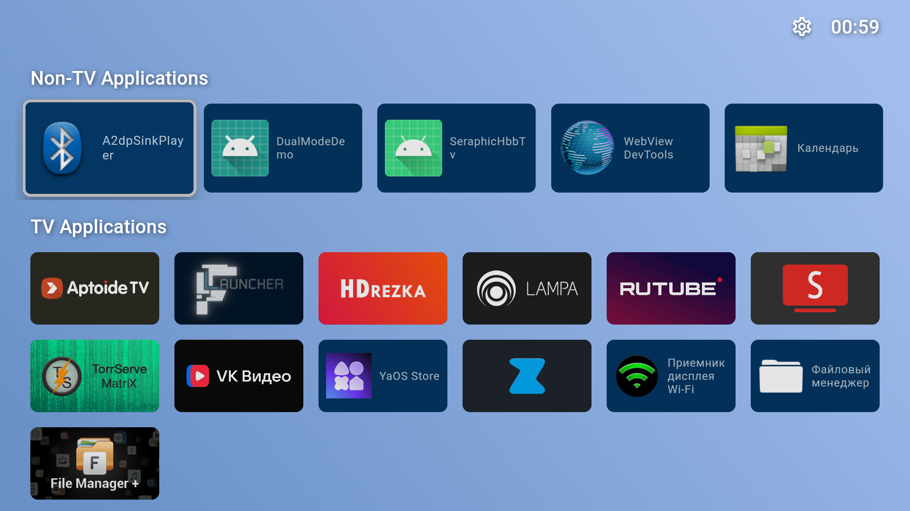
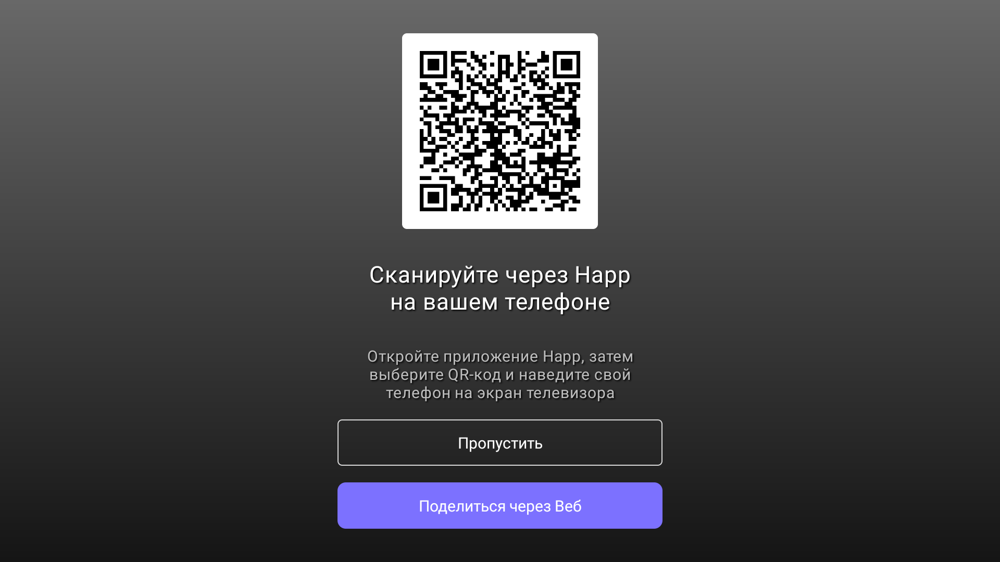
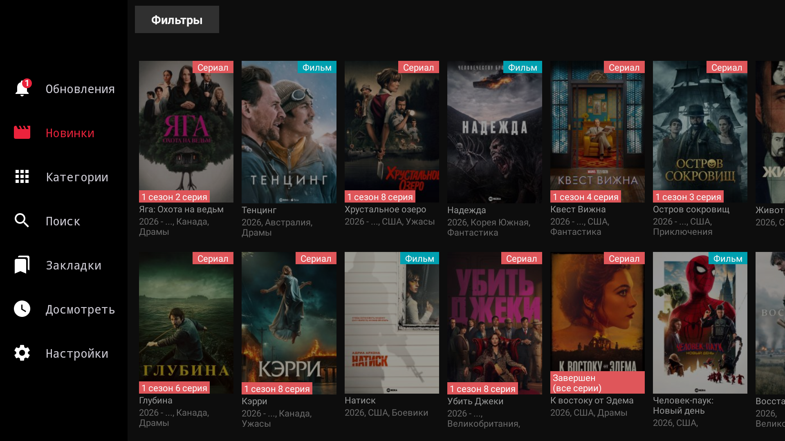

Пошаговое руководство: как открыть скрытый доступ к отладке (ADB), установить Zona, HDrezka, Happ, File Manager+, убрать тяжелую рекламу или переключиться на чистый FLauncher с возможностью отката в 1 клик.
В большинстве бюджетных телевизоров на Яндекс ТВ (Tuvio, Hartens, DEXP, Novex, Hi и др.) стандартный пункт «Отладка по USB» в настройках разработчика вырезан или скрыт. Но его можно включить через заводское сервисное меню платформы CVTE.
Чтобы убедиться, что отладка успешно активировалась и компьютер видит телевизор, запустите проверочный файл в папке:
Скрипт сам найдет телевизор в сети, подключится и выведет зеленую плашку с моделью ТВ и версией Android. Если при этом на экране ТВ появится запрос — нажмите пультом «Всегда разрешать» и «ОК».
В папке SmartTV_Toolbox на вашем рабочем столе уже всё настроено: лежат готовые исполняемые файлы, официальный инструмент adb и все необходимые APK-файлы. Скрипт сам ищет телевизор в сети, поэтому вам даже не нужно знать его IP-адрес!



com.yandex.tv.settings и экранная клавиатура намеренно не трогаются. Вы всегда можете зайти в настройки через значок шестеренки в верхнем правом углу..apk файл в папку apps и установить его через adb install или через установленный на ТВ File Manager +.